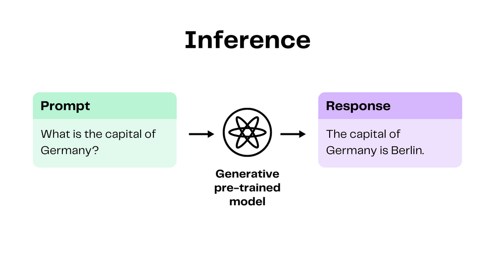

The two models fueling generative AI products: Transformers and diffusion models
Uncover the secrets behind today's most influential generative AI products in this deep dive into Transformers and Diffusion models. Learn how they're created and how they work in the real-world.
To most people, even experienced data scientists and software engineers, generative AI seems like a big black box. And that's because it sort of is. Generative machine learning models, the workhorses behind today's most popular generative AI products, actually do suffer from a lack of interpretability and transparency. This means that even the people training these models have a hard time understanding why the model chooses to respond with a particular output.
Despite the somewhat mysterious nature of generative models, it's important to understand that generative models don't just "create something out of nothing." Instead, they "create something out of a lot of something elses." There are methods and algorithms behind what appears to be "magic." Understanding the algorithms behind generative modeling empowers you to choose how you interact with AI and what credence you give its outputs.
This article will provide you with an overview of how generative models work, why they work so well, and explain how to build and use the two most impactful models that power some of the best generative AI products on the market today: Transformers and diffusion models.
What are generative models?
The objective of machine learning is to develop models that can learn from and make predictions or decisions based on data. Given the broad spectrum of industries leveraging machine learning and the diverse problems it tackles, there's no “one-size-fits-all” solution or model applicable to all machine learning tasks. Model selection depends on a number of factors, including the nature, quality, and size of available training data as well as desired model performance and the task to be completed.
Generative modeling involves training models to learn to predict probabilities for data based on learning the underlying structure of the input data alone. This means that when the goal of the task is to create novel data that closely resembles existing data, generative machine learning models are the best options. AI products that generate new media, whether it be text, images, or audio are all powered by generative models. Generative AI products range from chatbots, like ChatGPT, to prompt-based photo editing, like Adobe Firefly. While the media that these products produce and the way do it varies, they all rely on generative AI models. As with all forms of artificial intelligence, understanding how they work and what their limitations are is crucial, particularly when it comes to data generation. Now that we've defined generative models, let's take a look at how they actually work.
How do generative models work?
It's important to understand the distinctions between how the generative models are used and how generative models are created. The process of sending input and receiving a response from an existing machine learning model is called inference. An example of this would be asking ChatGPT "What is the capital of Germany?" The underlying language model will receive this input and likely respond with something like "The capital of German is Berlin." In this case, the input to the model can also be called a prompt. Most generative AI products on the market today require a prompt of some sort and will respond with the generated output, whether that be in text, image, audio, or video form.

The process of creating generative models is called the training phase. All machine learning models need to be supplied with training data, but the manner in which they learn from that data varies. Generative models focus on understanding the intrinsic structure of the training data, including patterns and associations among the data.
For instance, if you feed a generative model images of cats and dogs, it will learn which types of combinations of physical features (ear shape, fur color, nose shape, eye color) tend to be indicative of cats versus dogs. They do this by learning something called a joint probability distribution, the probability of certain features in the input data occurring together. Once a generative model has this understanding, it can create new data that are similar to what it was trained on.
An important feature of generative models is that they don’t require labeled data in order to create a model. This means that you can feed a generative model pictures of cats and dogs without supplying the accompanying labels for each of the pictures, and the model will still learn how to determine the difference between them as well as learn how to generate images that look like realistic cats and dogs. This is a game changer because labeled data can often be imbalanced and hard to come by in the real world.
The ability to learn from large amounts of unlabeled data allows generative models to develop excellent global knowledge. This is one factor that makes generative models so effective. Another factor is their ability to leverage vast amounts of data for pre-training and their capability to be fine-tuned, as we'll explore in the following section.
Why do generative models work so well?
They are pre-trained on lots of data
Recent advancements in training techniques and improved computation power mean that generative models can learn from massive amounts of unlabeled data. For instance, the Common Crawl Dataset, contains several petabytes of text data scraped from the internet since 2008. Datasets like Common Crawl are used in the pre-training process, which refers to the initial phase of training where a model learns from a large amount of general data before it is fine-tuned on a specific task. Models that undergo the pre-training process are called foundation models, and are designed to learn a broad base of knowledge from large-scale datasets.
Here are a few examples of generative foundation models trained on large datasets:
LLaMA (Meta AI) is a large language model pre-trained on 1.4 trillion tokens (individual units of text).
Stable Diffusion (Stability AI) is an image generation model pre-trained on 2.3 billion English-captioned images from the internet.
GPT-3 (OpenAI), the predecessor to ChatGPT and GPT-4, was pre-trained on 300 billion tokens.

While the ability to learn from enormous datasets is a crucial aspect of the effectiveness of generative modeling, it's only part of the story. Another key to their power lies in the concept of fine-tuning.
Conclusion
In this article, we've covered how generative models operate, and dove deeper into the pre-training processes behind diffusion and transformer models. Both of these models are trained on large datasets and are especially adept at creating outputs that look remarkably similar to their training data, whether they be images or text. Both types of models have a vast base of general knowledge and can also be fine-tuned on smaller amounts of additional data in order to perform better on specific tasks. Generative machine learning models are extraordinarily powerful, which means that their usage comes with risk. Remember to consider the limitations and ethical implications of individual generative models when using generative AI tools in the real world.